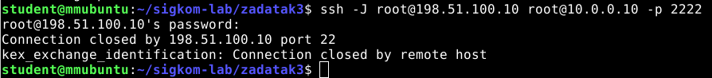
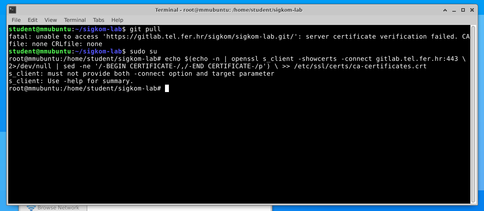

Skenk postavi “PermitRootLogin yes” u sshd_config na oba servera
gladiator jesam, nije mi pomoglo
gladiator ne pomaze 🙁
Skenk imaš možda rješenje? isti problem
Koliko naredba imate u prvom zadatku?
u 3. sam prestao dobivat permission denied, ali sad mi dolazi connection timed out stdio forwarding failed. zna neko u cemu je problem?
Me ako se dobro sjecam meni je to bilo jer mi nije bilo dobro pravilo za ssh -> ssh_int, ali nisam 100% siguran
čakijale mislis na pravilo u FW_int? ovako mi je sada $IPT -A FORWARD -i eth0 -p tcp –dport 22 -s 198.51.100.10 -j ACCEPT

Ovo dobijem nakon što pokrenem stvaranje konfiguracija, promijenim portove i “PermitRootLogin yes”. Ne znam što se događa i je li ovo dobro?
Artemis
Me
Promijenili ste port na 2222 pa vise nije na 22
 Jel zna netko mozda zas mi ne radi ovaj njihov fix za git pull?
DoktorZnanosti izbrisi \ , to je samo oznaka da se linija prekida u novi red u uputama, tj da to nisu 3 odvojene naredbe
Kako se može testirati ovo što se postavi u prvom? Ove ssh naredbe u drugom, šta to mora vratiti kad je dobro, a šta kad nije dobro?
Jel za antispoofing u FW_int dropamo pakete sa sourceom 192.0.0.0 a u FW iz 10.0.0.0?
bjunolulz u FW dropas ako ti na vanjsko sucelje dolazi paket sa source adresom iz podmreze 198.51.100.0/24 , a u FW_int dropas ako ti na vanjsko sucelje dolazi paket sa sourceom iz podmreze 10.0.0.0/24 ili na unutarnje sucelje dolazi iz podmreze 198.51.100.0/24
Kada se dobije privatni ključ?
mravluk kad napravis ssh-keygen dobijes javni i privatni kljuc
Di mijenjam ove datoteke iz 3. Zadatka, pretpostavljam u konzoli čvora ali ne znam kako
Kad nam napišu da se spajamo preko ssh-a iz Ubuntua, na kaj se to misli? Doslovno terminal u VM-u dok imamo pokrenuti eksperiment?
[obrisani korisnik] da
Ima neko možda ideju zakaj mi se niš ne događa nakon pokrenute ssh naredbe? Ni na Wiresharku nema ničega kad gledam na ext1…